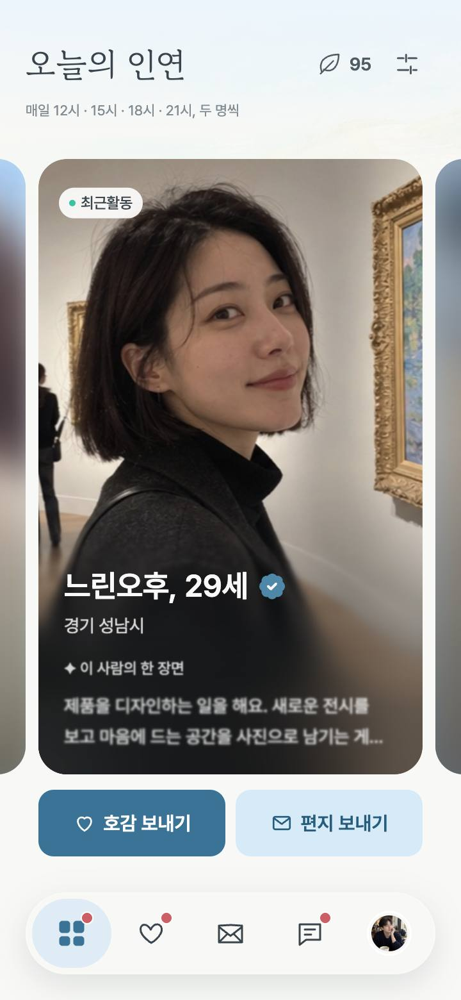
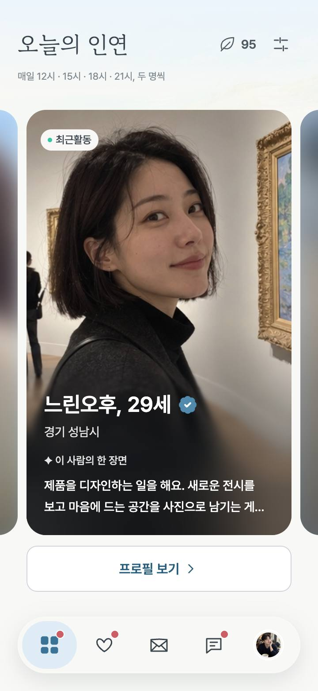

오늘의 인연 · 연 카드 아래 버튼
- 받은 피드백: 열어본 카드 아래에 호감 보내기 · 편지 보내기가 있으면 프로필을 안 보고 바로 누르는 분이 많아서, 이 행동은 상대 프로필 안에만 두었어요.
- 세 안 모두: 홈에서 호감 · 편지 버튼을 뺐어요. 호감 · 편지는 프로필 안(오른쪽 끝 화면)에서만. 카드를 누르면 지금처럼 프로필로 가요.
- 서로 연결된 사람의 "서로 연결됨 · 편지함에서 이어가기"는 호감 · 편지를 보내는 버튼이 아니라서 그대로 둬요.

